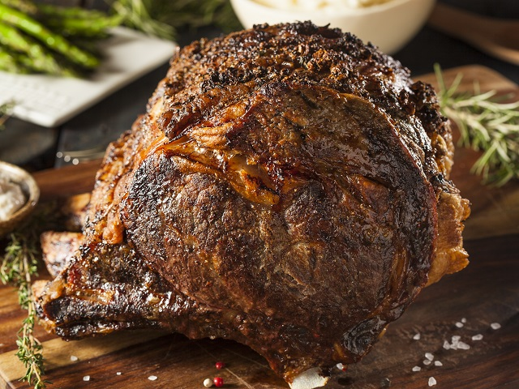

Meowscular Chef's Platter: Roast Beef

Image source
Tender sliced roast Dodohama meat will give energy to last through any hunt
Serves: 4-6
Ingredients:
- 1 kg beef
- 1 egg white
- 3 cloves garlic, diced
- 1 Tbsp rosemary
- 1 Tbsp thyme
- Kosher salt
- Freshly ground black pepper
Steps:
- Presear beef in pan on medium-high heat.
- Preheat oven to 450 °F (230 °C).
- Whisk egg white into foam, add rosemary, thyme, salt and pepper. Mix together and rub into meat with garlic.
- Place on a roasting rack. Roast for 15 minutes, then for 1,5-2 more hours on 325 °F (160 °C).
- Take out of the oven and let the meat rest for 15 minutes before serving.
Back to main